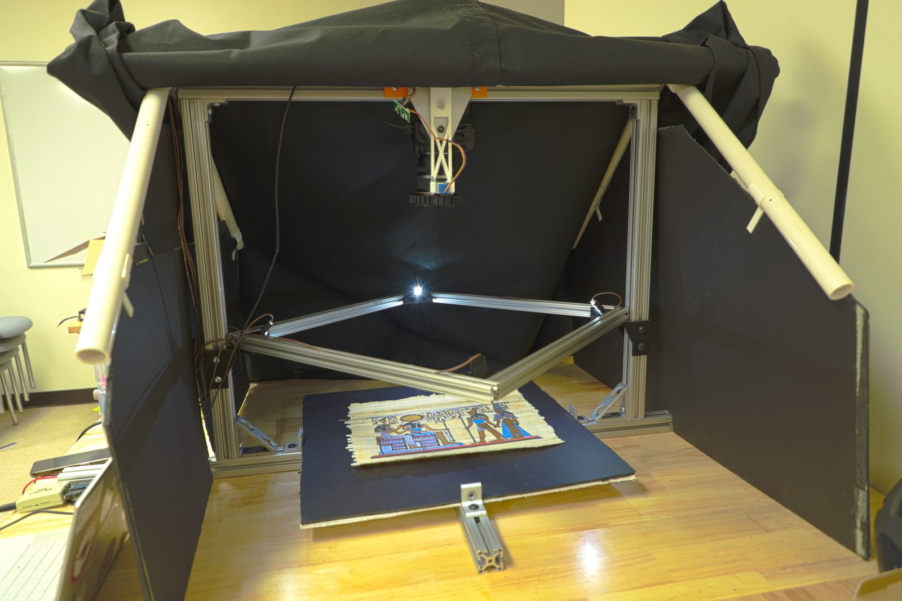
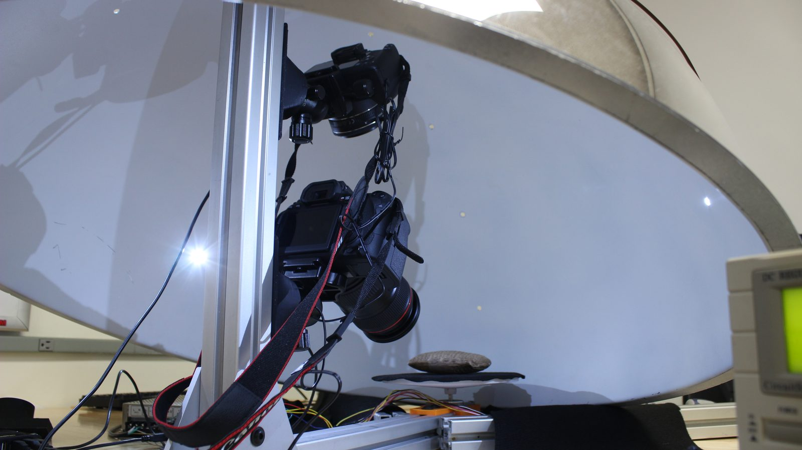
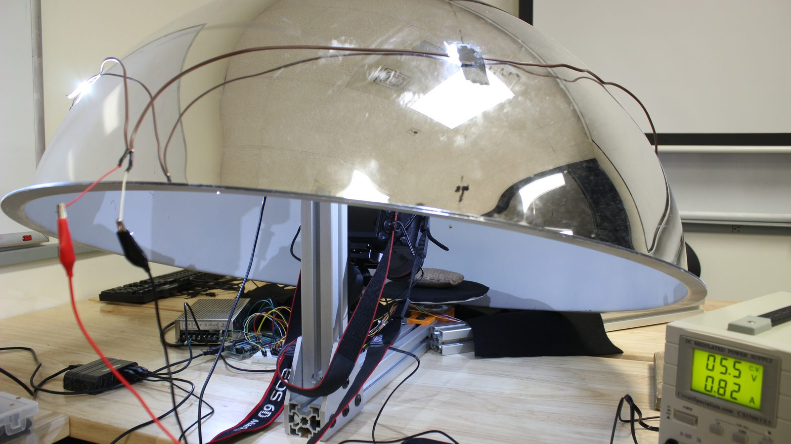

2D · Photometric Stereo
Papyrus & Flat Manuscripts

For objects that need fine surface detail but little real depth —
papyrus, parchment, and other largely flat manuscripts. Instead of
reconstructing geometry, it recovers how the surface responds to
light to reveal texture, ink, and relief.
Capture rig
A DSLR tethered over USB, paired with an Arduino-driven
directional lighting array. It shoots the manuscript once per
light direction, capturing a set of same-frame images that differ
only in where the light comes from.
Modeling pipeline
- Directional-light capture — the rig fires each light in turn and saves the frames.
- Photometric stereo — the frames are combined into normal, albedo, and detail maps.
- Rendering — a Three.js / Vite stage bakes those maps into a textured
.glb model.
- Viewer — the model opens in the interactive viewer above.
Runs on Windows · DSLR + Arduino lighting rig
Documentation ↗
3D · Photogrammetry
Cuneiform Tablets & Objects


For artifacts whose form matters in every dimension — cuneiform
tablets, seals, and other objects with genuine depth. It
reconstructs true 3D geometry from many overlapping photographs.
Capture rig
A multi-camera rig, coordinated by an Arduino, photographs the
artifact from many angles at once so every surface is seen from
multiple viewpoints.
Modeling pipeline
- Background removal — each photo is isolated to just the artifact.
- COLMAP reconstruction — GPU-accelerated (CUDA) structure-from-motion and dense stereo build a point cloud.
- Alignment — FPFH feature matching merges the clouds from each side into one.
- Meshing — Open3D Poisson reconstruction turns the cloud into a textured model.
Runs on WSL2 + NVIDIA GPU · multi-camera rig
Documentation ↗